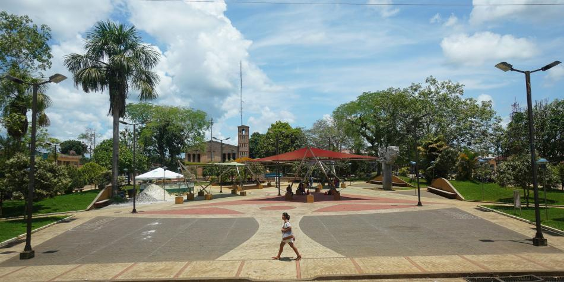

|
|
|
|  |
A Vaupés el virus llegó desde Brasil; hay 11 contagios y solo una UCIADN- Jueves 6 de mayo del 2020 |
El gobernador de Vaupés, Eliécer Pérez, decretó toque de queda y aislamiento total de la población durante tres días ante la irrupción de coronavirus, que habría llegado por Brasil, y ante las precarias condiciones del servicio de salud en su departamento.
El mandatario señaló que el Instituto Nacional de Salud ya le reportó once casos y que en Vaupés únicamente tiene 24 camas de hospitalización y una Unidad de Cuidados Intensivos, con un hospital pequeño en la capital Mitú y con muchas carencias y con centros de salud en Taraira y Carurú, que apenas tienen de a dos camas hospitalarias, cada uno.
Por fortuna dijo, de las once personas con el virus no hay ninguna hospitalizada, pero están aisladas. El ejército les facilitó una carpa con capacidad para 54 camas, pero no tienen ni las camas ni los equipos para equiparla.
A través de una video conferencia, dijo el mandatario, le solicitó al Ministerio de Salud apoyo para estar preparados para atender la emergencia en un departamento que tienen 45.600 habitantes, de los cuales unos 38.000 son población indígena.
El gobernador cree que el contagio llegó de San Gabriel de Cachoveira (Brasil), a 700 kilómetros en línea recta de Mitú, desde donde sus habitantes se desplazan a Manaos y Yavaraté, también en el vecino país.
De allí pasan el río Vaupés, al frente al centro poblado también llamado Yavaraté, en la última esquina al oriente de Colombia y toda esta gente se despliega por el departamento por las dificultades de salud que tienen en el vecino país, y para llegar a Colombia duran entre 20 y 15 días caminando o por el río.
Además de Yavaraté, el departamento de Vaupés tiene caseríos como Camanaos, Puerto Colombia, Bocas de Terarín y Taraira, limítrofes con Brasil.
La medida de toque de queda y aislamiento total adoptada por el gobernador de Vaupés, se une a la establecida por el Gobierno Nacional para su vecino departamento de Amazonas para contrarrestar la grave expansión del virus, especialmente en Leticia
La decisión del Gobierno implica el aislamiento preventivo obligatorio de todas las personas habitantes del departamento del Amazonas del 15 hasta el 30 de mayo.
Además, se adelantará una cumbre en la participará la Canciller colombiana, el Ministro de Defensa y el Ministro de Salud con sus homólogos del Brasil, de tal manera que la homogeneidad de políticas en zona fronteriza. En Amazonas el primer caso de covid-19 se registró el pasado 17 de abril y hoy, un mes después, hay 924 casos.